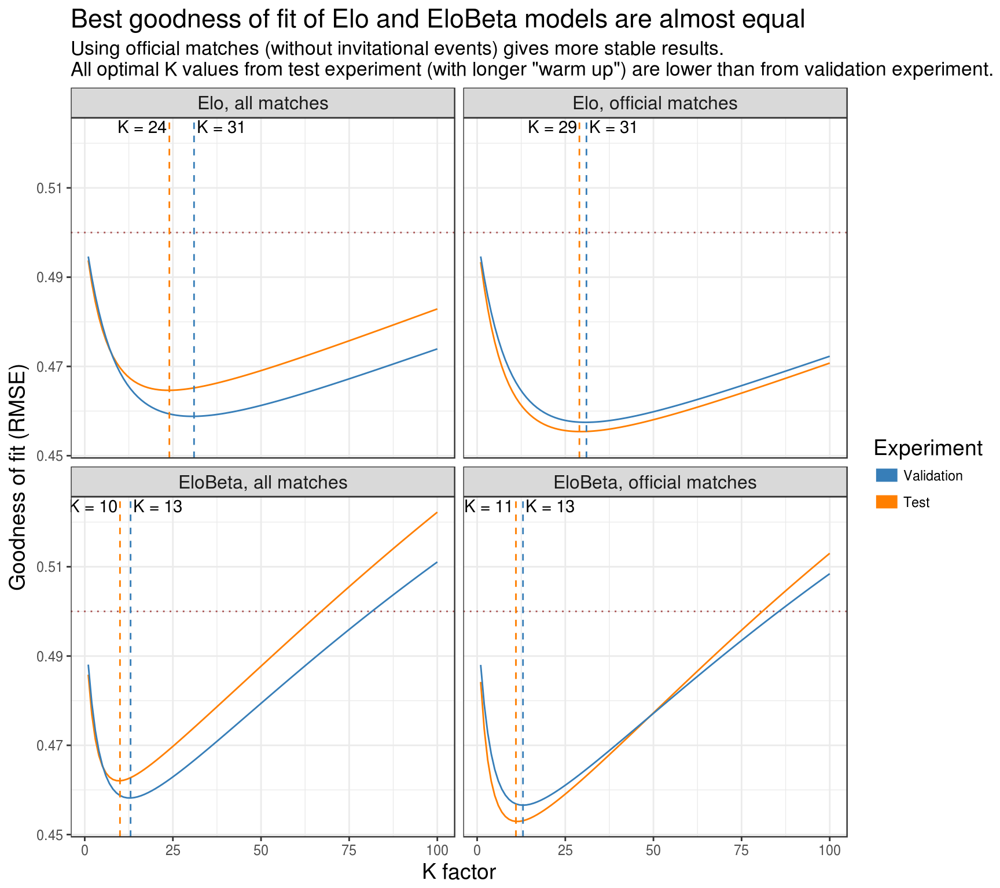
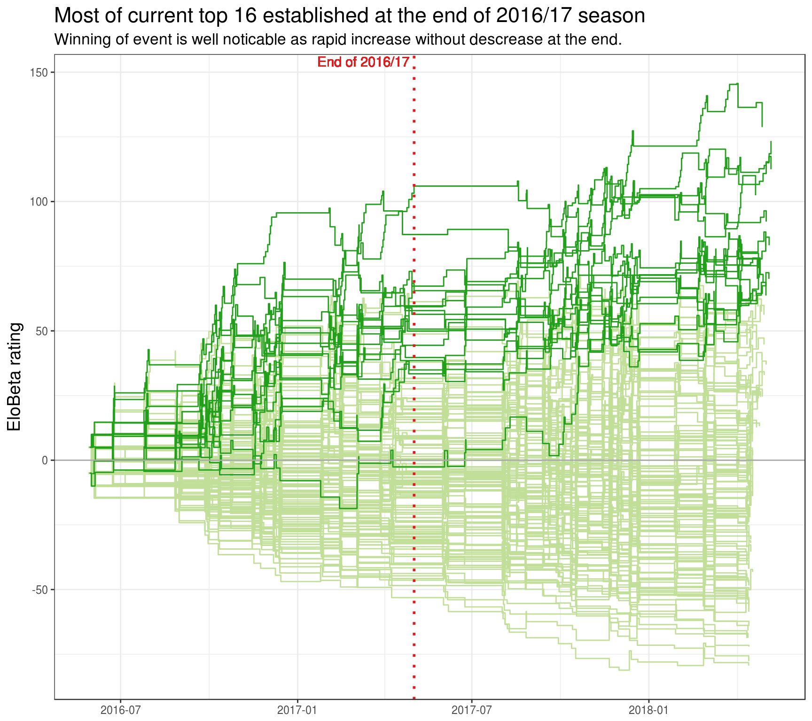
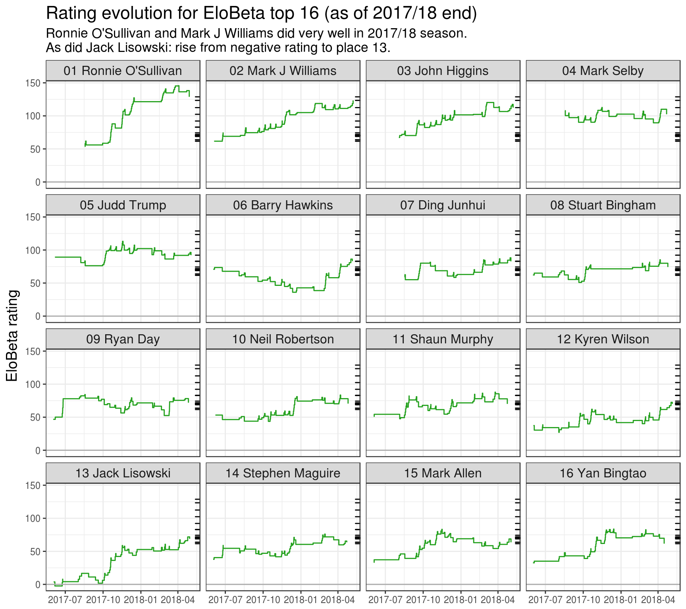

Elo and EloBeta models in snooker
Prologue
For many years I’ve been following snooker as a sport. It has it all: hypnotic beauty of smart play, elegance of cue strikes and psychological tension of competition. The one thing I don’t like that much is its ranking system.
Generally speaking, current snooker ranking is based on player accomplishments in tournaments (events) with different “weights” for different tournaments. Long time ago, it just used World Championships. Then, after more events had emerged, there was a table of points player could earn for winning at certain stage of tournament. Now it has the form of “rolling” sum of prize money player won during (roughly) past two calendar years.
This system has two main advantages: it is simple (win more money -> rise in rankings) and predictabile (want to get certain ranking -> win certain amount of money, other things being equal). The problem is that this type of rankings doesn’t account the strength (skill, form) of player’s opponents. The usual counter-argument for this is that if player reached high stage of tournament then he/she is “strong” at this moment of time (“weak players don’t win tournaments”). Well, it does sound quite convincing. However, in snooker, as in any sport, the role of chance should be taken into account: if player is “weaker” it doesn’t mean that he can’t ever win in a match with “stronger” player. It means that this happens less often then the other way around. Here where Elo model comes into play.
The idea behind Elo model is that each player is associated with numerical rating. The assumption is that a result of a game between two players can be predicted based on difference of their ratings: more value indicates more probability of “stronger” (with higher rating) player to win. Elo ranking is based on current player “strength” derived by wins against other players. This eliminates main disadvantage of current official ranking system. It is also capable of updating player rating during tournament to numerically react to player’s strong tournament performance.
Having some practical experience with Elo ratings, I think it can do well in snooker too. However, there is one obstacle: it is devised for competitions with uniform type of games. Yes, there are some variations to account for home field advantage in football or first move advantage in chess (both by adding fixed amount of rating points to “less advantageous” player). In snooker, however, matches are played in the “best of \(N\)” format: the first one to win \(n = \frac{N + 1}{2}\) frames wins a match. We will also call this format “\(n\) to win”.
Intuitively, winning a “10 to win” match (final of major tournament) should be harder for “weaker” player then “4 to win” match (first rounds of current Home Nations tournaments). This is taken into account by my proposed EloBeta model.
To celebrate actual start of 2018/19 snooker season I decided to write this post in which I explore adequacy of both Elo and EloBeta models on snooker match results. Note that the goal is not to build models for forecasting and gambling purposes but for assessing players “strength” and creating “fair” ranking.
The idea of using Elo rating in snooker is not new at all. There are works on this topic, for example:
- Snooker Analyst provides “Elo inspired” (more like Bradley–Terry model) rating system based on the idea of updating rating based on difference between “actual frames won” and “expected frames won”. This approach is a little bit questionable. Surely, more frame difference should indicate more difference in strength, however, achieving that is not player’s goal. In snooker aim is “just” to win match, i.e. get certain amount of frame wins before the opponent.
- This forum discussion with implementation of basic Elo model.
- Possibly, there are other works that I’ve missed. I will highly appreciate any information on this topic.
Overview
This post is intended for both R users interested in Elo ratings and snooker analysts and fans. All experiments are written with intention to be reproducible. All code is hidden under spoilers (text appears after clicking on its summary, usually beginning with “Code for …”). It has commentaries and uses tidyverse packages, so it might be an interesting read for R users and programmers.
This post is organized as follows:
- Models describes Elo and EloBeta models with their R implementations.
- Experiment describes details and intentions of computations: which data and methodology were used (and why) and what are the results.
- Exploration of EloBeta ratings has application results of EloBeta model to actual snooker data. This section is written more for Snooker fans than for R enthusiasts.
We will need the following setup:
# Data wrangling packages
suppressPackageStartupMessages(library(dplyr))
library(tidyr)
library(purrr)
# Visualization package
library(ggplot2)
# Package for ratings
suppressPackageStartupMessages(library(comperank))
theme_set(theme_bw())
# Shouldn't be needed. Added just in case.
set.seed(20180703)Models
Both models are based on the following assumptions:
- There is a fixed set of players which should be ranked from “strongest” (first place) to “weakest” (last place).
- Ranking is done by associating player \(i\) with numerical rating \(r_i\): a number indicating the “strength” of player (more value -> “stronger”).
- The more difference in player ratings before the match the less favorable is “weaker” player to win it.
- Ratings are updated after every match based on its result and the ratings before it.
- Winning against “stronger” opponent should lead to bigger increase in rating than winning against “weaker” opponent. The opposite should be true for losing.
Elo
#' @details This function is vectorized by all its arguments. Also usage of
#' `...` is crucial to allow supplying unrelated arguments in the future.
#'
#' @return A probability of player 1 (rating `rating1`) wins in a match with
#' player 2 (rating `rating2`). Here difference in ratings directly affects
#' the outcome.
elo_win_prob <- function(rating1, rating2, ksi = 400, ...) {
norm_rating_diff <- (rating2 - rating1) / ksi
1 / (1 + 10^norm_rating_diff)
}
#' @return A rating function for Elo model that can be supplied to
#' `comperank::add_iterative_ratings()`.
elo_fun_gen <- function(K, ksi = 400) {
function(rating1, score1, rating2, score2) {
comperank::elo(rating1, score1, rating2, score2, K = K, ksi = ksi)[1, ]
}
}Elo model updates ratings by the following steps:
Compute probability (before the match) of certain player to win the match. Probability of one player (we will call him/her “first”) with “identifier” \(i\) and rating \(r_i\) winning against the other player (“second”) with “identifier” \(j\) and rating \(r_j\) is equal to
\[Pr(r_i , r_j) = \frac{1}{1 + 10^{(r_j - r_i)/400}}\]
This way of computing probability is aligned with third model assumption.
Difference normalization by 400 is a mathematical way to say which difference is considered “big”. This can be replaced by a model parameter \(\xi\), however this only affects the spread of future ratings and is often an overkill. Number 400 is fairly standard in chess world.
In general approach probability is equal to \(L(r_j - r_i)\) where \(L(x)\) is some strictly increasing function with values from 0 to 1. We will use logistic curve to compute winning probability. More thorough study can be found in this article.
Obtain match result \(S\). In basic model it is 1 if first player wins (second player loses), 0.5 in case of draw and 0 if second player wins.
Update ratings:
- \(\delta = K \cdot (S - Pr(r_i , r_j))\). This is the value by which ratings will change. It introduces the “K factor” (only model parameter). Less \(K\) (ratings being equal) means less change in ratings - model is more conservative, i.e. more wins is needed to “prove” increase in “strength”. On the other hand, more \(K\) means more “trust” to the current results than current ratings. Choosing “optimal” \(K\) is a way to produce “good” ranking system.
- \(r_i^{(new)} = r_i + \delta\), \(r_j^{(new)} = r_j - \delta\).
Notes:
- As one can see from rating update formulas, the sum of ratings for all ranked players doesn’t change over time: rating increase of one rating can be only done by taking this amount from another player.
- Players without any matches played are associated with initial rating 0. The usual value is 1500, however I don’t see any other reason except psychological for this. With previous note, using 0 means that sum of all ratings will always be 0, which is kind of beautiful.
- It is needed some matches to be played in order for rating to represent player’s “strength”. This introduces a problem: newly added players start with rating 0 which is almost surely not the lowest among current players. In other words, newcomers are considered to be “stronger” than some other players. This should be dealt with by external procedures of rating updates when introducing new player: maybe he/she should start with some low rating while compensating overall sum decrease by uniform increasing of other players’ ratings.
- Why this procedure makes sense? In case of equal ratings \(\delta\) always equals \(0.5 \cdot K\). Let’s say, for example, that \(r_i = 0\) and \(r_j = 400\). It means that probability of first player winning is \(\frac{1}{1 + 10} \approx 0.0909\), i.e. he/she will win 1 out of 11 matches.
- In case of win, he/she will be awarded with approximately \(0.909 \cdot K\) increase, which is more than in case of equal ratings.
- If he/she is defeated, then rating is decreased by approximately \(0.0909 \cdot K\), which is less than in case of equal ratings.
Of course, Elo model has its (fairly high-level) practical issues. However, the most important for our research is that “it thinks” that all matches are played in uniform conditions. It means, that match length isn’t taken into account: winning in “4 to win” match is rewarded the same as winning in “10 to win” match. That is where EloBeta comes into play.
EloBeta
#' @details This function is vectorized by all its arguments.
#'
#' @return A probability of player 1 (rating `rating1`) wins in a match with
#' player 2 (rating `rating2`). Match is played until either player wins
#' `frames_to_win` frames. Here difference in ratings directly affects
#' the probability of winning one frame.
elobeta_win_prob <- function(rating1, rating2, frames_to_win, ksi = 400, ...) {
prob_frame <- elo_win_prob(rating1 = rating1, rating2 = rating2, ksi = ksi)
# Probability that first player wins `frames_to_win` frames sooner than second
# player based on probability of first player to win one frame `prob_frame`.
# Frames are treated as independent games.
pbeta(prob_frame, frames_to_win, frames_to_win)
}
#' @return Match result in terms of player 1 win: 1 if he/she wins, 0.5 in case
#' of a draw, and 0 if he/she loses.
get_match_result <- function(score1, score2) {
# There are no ties in snooker but this handles general case
near_score <- dplyr::near(score1, score2)
dplyr::if_else(near_score, 0.5, as.numeric(score1 > score2))
}
#' @return A rating function for EloBeta model that can be supplied to
#' `comperank::add_iterative_ratings()`.
elobeta_fun_gen <- function(K, ksi = 400) {
function(rating1, score1, rating2, score2) {
prob_win <- elobeta_win_prob(
rating1 = rating1, rating2 = rating2,
frames_to_win = pmax(score1, score2), ksi = ksi
)
match_result <- get_match_result(score1, score2)
delta <- K * (match_result - prob_win)
c(rating1 + delta, rating2 - delta)
}
}In Elo model difference in ratings directly affects the outcome probability of winning the whole match. The main idea behind EloBeta model is to make difference in ratings directly affect the outcome of one frame and actually compute the probability of a player winning \(n\) frames before his opponent.
The question is: how to compute this probability? Turns out, this is one of the oldest task in the history of probability theory and has its own name - Problem of points. Very nice description can be found in this post. Using its notation, the outcome probability equals to:
\[ P(n, n) = \sum\limits_{j = n}^{2n-1}{{{2n-1} \choose {j}} p^j (1-p)^{2n-1-j}} \]
Here \(P(n, n)\) is a probability of first player to win in “\(n\) to win” match; \(p\) is his/her probability to win one frame (\(1-p\) - opponents probability). With this approach one assumes that result of frames inside a match is independent one from another. This is arguable, but necessary assumption (in terms of this model).
Is there a way to compute this faster? It turns out, that the answer is yes. After hours of formula wrangling, practical experiments and internet search I found the following property of regularized incomplete beta function \(I_x(a, b)\). By substituting \(m = k,~ n = 2k - 1\) into that property and changing \(k\) into \(n\) we obtain that \(P(n, n) = I_p(n, n)\).
This is also very good news for R users, because \(I_p(n, n)\) can be computed as simply as pbeta(p, n, n). Note that the general case probability of winning \(n\) frames before opponent wins \(m\) can also be computed as \(I_p(n, m)\) and pbeta(p, n, m) respectively. This introduces the reach field of updating winning probabilities during the mach.
So the procedure of updating ratings within EloBeta model is as follows (given ratings \(r_i, r_j\), number of frames \(n\) to win in match and match outcome \(S\), as in Elo model):
- Compute probability of first player to win the frame: \(p = Pr(r_i , r_j) = \frac{1}{1 + 10^{(r_j - r_i)/400}}\).
- Compute probability of this player to win the match: \(Pr^{Beta}(r_i, r_j) = I_p(n, n)\). For example, if \(p\) equals 0.4 then probability to win “4 to win” match drops to
r round(pbeta(0.4, 4, 4), 2)and with “18 to win” tor round(pbeta(0.4, 18, 18), 2). - Update ratings:
- \(\delta = K \cdot (S - Pr^{Beta}(r_i , r_j))\).
- \(r_i^{(new)} = r_i + \delta\), \(r_j^{(new)} = r_j - \delta\).
Note that, as difference in ratings affects probability of winning one frame (not the whole match), we should expect lower optimal \(K\): part of \(\delta\)’s value comes from amplifying effect of \(Pr^{Beta}(r_i, r_j)\).
The idea of computation match result based on probability of winning one frame is not very novel. On this site, authored by François Labelle, you can find online computation of probability of winning a “best of \(N\)” match (with some other functionality). I was very glad to notice that results of our computations match. However, I didn’t find any sources of incorporating this into Elo updating procedure. I will highly appreciate any information on this topic.
I’ve only managed to found this post and this description of Elo system on backgammon internet server (FIBS). Here different matches are handled by multiplying rating difference by square root of match length. However, there seems to be no strong theoretical reason for this.
Experiment
The experiment has several goals. Based on snooker data:
- Derive best value of “K factor” for both models.
- Study stability of models in terms of prediction probability accuracy.
- Study the effect of using “invitational” events on ratings.
- Produce “best” rating history of all professional players from 2017/18 season.
Data
# Function to split cases between "train", "validation", and "test" types
split_cases <- function(n, props = c(0.5, 0.25, 0.25)) {
breaks <- n * cumsum(head(props, -1)) / sum(props)
id_vec <- findInterval(seq_len(n), breaks, left.open = TRUE) + 1
c("train", "validation", "test")[id_vec]
}
pro_players <- snooker_players %>% filter(status == "pro")
# Matches only between pro players.
pro_matches_all <- snooker_matches %>%
# Using actually happened matches
filter(!walkover1, !walkover2) %>%
# Filter matches only between pro players
semi_join(y = pro_players, by = c(player1Id = "id")) %>%
semi_join(y = pro_players, by = c(player2Id = "id")) %>%
# Add 'season' column
left_join(
y = snooker_events %>% select(id, season), by = c(eventId = "id")
) %>%
# Ensure arranging by end date
arrange(endDate) %>%
# Prepare for widecr format
transmute(
game = seq_len(n()),
player1 = player1Id, score1, player2 = player2Id, score2,
matchId = id, endDate, eventId, season,
# Compute match type ("train", "validation", or "test") with 50/25/25 split
matchType = split_cases(n())
) %>%
# Convert to widecr format
as_widecr()
# Matches only between pro players in not invitational events (which by
# quantity is dominated by Championship League).
pro_matches_off <- pro_matches_all %>%
anti_join(
y = snooker_events %>% filter(type == "Invitational"),
by = c(eventId = "id")
)
# Split confirmation
get_split <- . %>% count(matchType) %>% mutate(share = n / sum(n))
# This should give 50/25/25 split (train/validation/test).
pro_matches_all %>% get_split()
# This gives different split because invitational events aren't spread evenly
# during season. However, this way matches are split based on the same
# __time__ breaks as in `pro_matches_all`. This ensures that matches with same
# type represent identical __time periods__.
pro_matches_off %>% get_split()
# Grid for K factor
k_grid <- 1:100tot_n_players <- pro_matches_all %>%
as_longcr() %>%
distinct(player) %>%
nrow()
get_mean_nmatches <- . %>% as_longcr() %>%
count(player) %>%
summarise(meanMatches = mean(n)) %>%
pull(meanMatches) %>%
round(digits = 1)
all_matches_per_player <- get_mean_nmatches(pro_matches_all)
off_matches_per_player <- get_mean_nmatches(pro_matches_off)
pro_matches_off_split <- pro_matches_off %>%
get_split() %>%
transmute(matchType, share = round(share * 100, 1)) %>%
tibble::deframe()
off_split <- pro_matches_off_split[c("train", "validation", "test")] %>%
paste0(collapse = "/")We will use snooker data from comperank package. The original source is snooker.org site. Results are taken from the following matches:
- Match is from 2016/17 or 2017/18 seasons.
- Match is a part of “professional” snooker event. That is:
- It has “Invitational”, “Qualifying”, or “Ranking” type. We will also differ two sets of matches: “all matches” (from all these events) and “official matches” (not from invitational events). There are two main reasons behind it:
- In invitational events not all players are given opportunity to change their ratings (which isn’t a clearly bad thing under Elo and EloBeta models).
- Belief that players “take seriously” only official ranking events. Note that most of “Invitational” events are from “Championship League” which, I think, are treated by most players as practice with opportunity to win money, i.e. “not very seriously”. Their presence can affect outcome ratings.
- It describes traditional snooker (not 6 Red or Power Snooker) between individual players (not teams).
- Both genders can take part (not only men or women).
- Players of all ages can take part (not only seniors or under 21).
- It is not “Shoot-Out” as those events are treated differently in snooker.org database.
- It has “Invitational”, “Qualifying”, or “Ranking” type. We will also differ two sets of matches: “all matches” (from all these events) and “official matches” (not from invitational events). There are two main reasons behind it:
- Match actually happened: its result is due to actual play from both players.
- Match is between two professionals (pros). List of professionals is taken as for 2017/18 season (
r tot_n_playersplayers). This seems like the most controversial decision, as removing “pro-ama” (“ama” for “amateur”) and “ama-ama” matches leads to “closing eyes” on pros’ losses to amateurs, and thus giving unfair advantage to those pros. I think this choice is necessary to ensure absence of rating inflation which will happen if matches with amateurs are taken into account. Another possibility would be to study pros and amas together, but this seems unreasonable to me within this research. Professional’s loss to amateur is treated as loss of opportunity to increase rating.
The final numbers of used matches are r nrow(pro_matches_all) for “all matches” and r nrow(pro_matches_off) for “official matches” (r all_matches_per_player and r off_matches_per_player matches per player respectively).
Methodology
#' @param matches A `longcr` or `widecr` object with column `matchType` (with
#' type of match for the experiment: "train", "validation", or "test").
#' @param test_type A type of match to be used for computing goodness of fit.
#' For experiment correctness, all matches with this type should happen later
#' than all other ("warm-up") matches. This means having bigger values in
#' `game` column.
#' @param k_vec Vector of "K factor" values to compute goodness of fit.
#' @param rate_fun_gen Function that, given "K factor" value, returns rating
#' function that can be supplied to `comperank::add_iterative_ratings()`.
#' @param get_win_prob Function to compute rating probability based on
#' ratings of players (`rating1`, `rating2`) and number of frames needed to
#' win in a match (`frames_to_win`). __Note__ that it should be vectorized by
#' all its arguments.
#' @param initial_ratings Initial ratings in format ready for
#' `comperank::add_iterative_ratings()`.
#'
#' @details This function computes:
#' - History of iterative ratings after arranging `matches` by `game` column.
#' - For matches with type equals to `test_type`:
#' - Probability of player 1 winning.
#' - Match result in terms of player 1 win: 1 if he/she wins, 0.5 in case of
#' a draw, and 0 if he/she loses.
#' - Goodness of fit in the form of RMSE: square root of mean square error,
#' where "error" is difference between predicted probability and match result.
#'
#' @return A tibble with columns 'k' for "K factor" and 'goodness' for RMSE
#' goodness of fit.
compute_goodness <- function(matches, test_type, k_vec, rate_fun_gen,
get_win_prob, initial_ratings = 0) {
cat("\n")
map_dfr(k_vec, function(cur_k) {
# Track execution
cat(cur_k, " ")
matches %>%
arrange(game) %>%
add_iterative_ratings(
rate_fun = rate_fun_gen(cur_k), initial_ratings = initial_ratings
) %>%
left_join(y = matches %>% select(game, matchType), by = "game") %>%
filter(matchType %in% test_type) %>%
mutate(
# Number of frames needed to win in a match
framesToWin = pmax(score1, score2),
# Probability of player 1 winning a match with `frame_to_win` frames
# needed to win.
winProb = get_win_prob(
rating1 = rating1Before, rating2 = rating2Before,
frames_to_win = framesToWin
),
result = get_match_result(score1, score2),
squareError = (result - winProb)^2
) %>%
summarise(goodness = sqrt(mean(squareError)))
}) %>%
mutate(k = k_vec) %>%
select(k, goodness)
}
#' A wrapper for `compute_goodness()` to be used with design matrix data.
compute_goodness_wrap <- function(matches_name, test_type, k_vec,
rate_fun_gen_name, win_prob_fun_name,
initial_ratings = 0) {
matches_tbl <- get(matches_name)
rate_fun_gen <- get(rate_fun_gen_name)
get_win_prob <- get(win_prob_fun_name)
compute_goodness(
matches_tbl, test_type, k_vec, rate_fun_gen, get_win_prob, initial_ratings
)
}
#' Function to perform experiment.
#'
#' @param test_type Vector of values for `test_type` for `compute_goodness()`.
#' @param rating_type Names of rating models.
#' @param data_type Suffixes of data types.
#' @param k_vec,initial_ratings Values for `compute_goodnes()`
#'
#' @details This function generates design matrix and computes multiple values
#' of goodness of fit for different combinations of rating and data types. For
#' this to work, variables with the following combinations of names should be
#' created in the global environment:
#' - "pro_matches_" + `<test type>` + `<data type>` for matches data.
#' - `<rating type>` + "_fun_gen" for rating function generators.
#' - `<rating type>` + "_win_prob" for functions that compute win probability.
#'
#' @return A tibble with columns:
#' - __testType__ <chr> : Test type identifier.
#' - __ratingType__ <chr> : Rating type identifier.
#' - __dataType__ <chr> : Data type identifier.
#' - __k__ <dbl/int> : Value of "K factor".
#' - __goodness__ <dbl> : Value of goodness of fit.
do_experiment <- function(test_type = c("validation", "test"),
rating_type = c("elo", "elobeta"),
data_type = c("all", "off"),
k_vec = k_grid,
initial_ratings = 0) {
crossing(
testType = test_type, ratingType = rating_type, dataType = data_type
) %>%
mutate(
dataName = paste0("pro_matches_", testType, "_", dataType),
kVec = rep(list(k_vec), n()),
rateFunGenName = paste0(ratingType, "_fun_gen"),
winProbFunName = paste0(ratingType, "_win_prob"),
initialRatings = rep(list(initial_ratings), n()),
experimentData = pmap(
list(dataName, testType, kVec,
rateFunGenName, winProbFunName, initialRatings),
compute_goodness_wrap
)
) %>%
unnest(experimentData) %>%
select(testType, ratingType, dataType, k, goodness)
}To find “optimal” value of \(K\) we will use the even grid \(K = 1, 2, ..., 100\). Accounting for greater values seems to be unreasonable which is confirmed by the experiment. The following procedure is used to find it:
- For every \(K\):
- Compute history of iterative ratings of certain model based on certain data set. It means that ratings of players would be known before every match. This is done with add_iterative_ratings() function from
comperankpackage. This procedure corresponds to “live ratings” which update after every match. - Based on data, starting from a certain (distant from the beginning) moment in time, compute goodness of model fit. We will use RMSE between probability of first player to win (computed based on model) and match result. That is \(RMSE = \sqrt{\frac{1}{|T|} \sum\limits_{t \in T}{(S_t - P_t)^2}}\), where \(T\) - indices of used matches, \(|T|\) - number of used matches, \(S_t\) - result of match for first player, \(P_t\) - probability of first player to win the match (computed based on model). Not including matches from the beginning of data is needed for ratings to “catch up” to “current strength” from initial ratings.
- Compute history of iterative ratings of certain model based on certain data set. It means that ratings of players would be known before every match. This is done with add_iterative_ratings() function from
- The value of \(K\) with stable minimal RMSE is said to be optimal. Here by “stable” we mean that small RMSE values is present in some neighborhood of optimal \(K\) (will be controlled not very strictly by looking at graphs). Values of RMSE lower 0.5 (value for “model” with constant 0.5 probability) will be considered a success.
As one of the goals is to study stability of models, data will be split into three subsets: “train”, “validation” and “test”. They are ordered in time, i.e. any “train”/“validation” match has ending time earlier than any “validation”/“test” match. I decided to do actual split in 50/25/25 proportion for “all matches”. Split of “official matches” is done by removing from “all matches” invitational events. It gives split not totally in desired proportion, but rather r off_split. However, this approach ensures that matches with same type in both match data represent identical time periods.
Experiment will be performed for all combinations of the following variables:
- Type of model: Elo and EloBeta.
- Type of match data: “All matches” and “official matches”.
- Experiment type: “Validation” (“validation” matches are used for computing RMSE after “warming up” on “train” matches) and “Test” (“test” matches are used after “warming up” on both “train” and “validation” ones).
Results
pro_matches_validation_all <- pro_matches_all %>% filter(matchType != "test")
pro_matches_validation_off <- pro_matches_off %>% filter(matchType != "test")
pro_matches_test_all <- pro_matches_all
pro_matches_test_off <- pro_matches_off# Takes some time to run
experiment_tbl <- do_experiment()experiment_tbl <- readRDS(
"2018-07-03-elo-and-elobeta-models-in-snooker_results.rds"
)cap_first <- function(x) {
paste0(toupper(substring(x, 1, 1)), substring(x, 2))
}
plot_data <- experiment_tbl %>%
unite(group, ratingType, dataType) %>%
mutate(
testType = cap_first(testType),
groupName = recode(
group, elo_all = "Elo, all matches", elo_off = "Elo, official matches",
elobeta_all = "EloBeta, all matches",
elobeta_off = "EloBeta, official matches"
),
# Ensure preferred order. This is needed because sorting of strings will
# give "Elo, all matches", "EloBeta, all matches", "EloBeta, official
# matches", and "Elo, official matches" as, apperently, non-letters are
# ignored while sorting.
groupName = factor(groupName, levels = unique(groupName))
)
compute_optimal_k <- . %>% group_by(testType, groupName) %>%
slice(which.min(goodness)) %>%
ungroup()
compute_k_labels <- . %>% compute_optimal_k() %>%
mutate(label = paste0("K = ", k)) %>%
group_by(groupName) %>%
# If optimal K within future facet is on the right, it needs a little
# adjustment to the right. If on the left - full and a little adjustment to
# the left.
mutate(hjust = - (k == max(k)) * 1.1 + 1.05) %>%
ungroup()
plot_experiment_results <- function(results_tbl) {
ggplot(results_tbl) +
geom_hline(
yintercept = 0.5, colour = "#AA5555", size = 0.5, linetype = "dotted"
) +
geom_line(aes(k, goodness, colour = testType)) +
geom_vline(
data = compute_optimal_k,
mapping = aes(xintercept = k, colour = testType),
linetype = "dashed", show.legend = FALSE
) +
geom_text(
data = compute_k_labels,
mapping = aes(k, Inf, label = label, hjust = hjust),
vjust = 1.2
) +
facet_wrap(~ groupName) +
scale_colour_manual(
values = c(Validation = "#377EB8", Test = "#FF7F00"),
guide = guide_legend(
title = "Experiment", reverse = TRUE,
override.aes = list(size = 4)
)
) +
labs(
x = "K factor", y = "Goodness of fit (RMSE)",
title = "Best goodness of fit of Elo and EloBeta models are almost equal",
subtitle = paste0(
'Using official matches (without invitational events) gives more ',
'stable results.\n',
'All optimal K values from test experiment (with longer "warm up") are',
' lower than from validation experiment.'
)
) +
theme(title = element_text(size = 14), strip.text = element_text(size = 12))
}
plot_experiment_results(plot_data)
From the experiment we can make the following conclusions:
- As it was expected, optimal \(K\) values for EloBeta are lower than for Elo.
- Using official matches (without invitational events) gives more stable results (“Validation” and “Test” results differ less). This shouldn’t be considered as a point that professionals take invitational events not seriously. Probably, this is due to quality of match results from “Championship League”: it has rather unpredictable “3 to win” format and tight schedule.
- Change in RMSE for optimal \(K\) is not substantial. That is, RMSE didn’t change drastically after computing optimal \(K\) in “Validation” and applying it in “Test” experiment. Moreover, on “official matches” it even decreased.
- All optimal K values from test experiment (with longer “warm up”) are lower than from validation experiment. This may be the result of longer “warm up” or just a feature of particular data.
- Best goodness of Elo and EloBeta fits are almost the same. Both are stable and below 0.5. Data for “official matches” (as they demonstrate stable behavior) is presented below. As results don’t differ that much, we will round optimal \(K\) to a factor of 5: for Elo model it is 30 and for EloBeta - 10.
| Group | Optimal K | RMSE |
|---|---|---|
| Elo, all matches | 24 | 0.465 |
| Elo, official matches | 29 | 0.455 |
| EloBeta, all matches | 10 | 0.462 |
| EloBeta, official matches | 11 | 0.453 |
Based on these results, I am inclined to conclude that Elo model with \(K = 30\) and EloBeta model with \(K = 10\) can be usefully applied to officially ranked snooker matches. However, EloBeta model accounts for different “\(n\) to win” matches, so it should be preferred over Elo.
Exploration of EloBeta ratings
The following results are computed based on “official matches” with EloBeta model (\(K = 10\)). All possible conclusions shouldn’t be viewed as personal to any player.
Top 16 by the end of 2017/18
# Helper function
gather_to_longcr <- function(tbl) {
bind_rows(
tbl %>% select(-matches("2")) %>% rename_all(funs(gsub("1", "", .))),
tbl %>% select(-matches("1")) %>% rename_all(funs(gsub("2", "", .)))
) %>%
arrange(game)
}
# Extract best "K factor" value
best_k <- experiment_tbl %>%
filter(testType == "test", ratingType == "elobeta", dataType == "off") %>%
slice(which.min(goodness)) %>%
pull(k)
#!!! Round to "pretty" number as it doesn't affect result that much!!!
best_k <- round(best_k / 5) * 5
# Compute ratings at the end of the data
elobeta_ratings <- rate_iterative(
pro_matches_test_off, elobeta_fun_gen(best_k), initial_ratings = 0
) %>%
rename(ratingEloBeta = rating_iterative) %>%
arrange(desc(ratingEloBeta)) %>%
left_join(
y = snooker_players %>% select(id, playerName = name), by = c(player = "id")
) %>%
mutate(rankEloBeta = order(ratingEloBeta, decreasing = TRUE)) %>%
select(player, playerName, ratingEloBeta, rankEloBeta)
elobeta_top16 <- elobeta_ratings %>%
filter(rankEloBeta <= 16) %>%
mutate(
rankChr = formatC(rankEloBeta, width = 2, format = "d", flag = "0"),
ratingEloBeta = round(ratingEloBeta, 1)
)Top 16 by EloBeta model at the end of 2017/18 season looks like this (official data is also taken from snooker.org site):
| Player | EloBeta rank | EloBeta rating | Official rank | Official rating | EloBeta rank increase |
|---|---|---|---|---|---|
| Ronnie O’Sullivan | 1 | 128.8 | 2 | 905 750 | 1 |
| Mark J Williams | 2 | 123.4 | 3 | 878 750 | 1 |
| John Higgins | 3 | 112.5 | 4 | 751 525 | 1 |
| Mark Selby | 4 | 102.4 | 1 | 1 315 275 | -3 |
| Judd Trump | 5 | 92.2 | 5 | 660 250 | 0 |
| Barry Hawkins | 6 | 83.1 | 7 | 543 225 | 1 |
| Ding Junhui | 7 | 82.8 | 6 | 590 525 | -1 |
| Stuart Bingham | 8 | 74.3 | 13 | 324 587 | 5 |
| Ryan Day | 9 | 71.9 | 16 | 303 862 | 7 |
| Neil Robertson | 10 | 70.6 | 10 | 356 125 | 0 |
| Shaun Murphy | 11 | 70.1 | 8 | 453 875 | -3 |
| Kyren Wilson | 12 | 70.1 | 9 | 416 250 | -3 |
| Jack Lisowski | 13 | 68.8 | 26 | 180 862 | 13 |
| Stephen Maguire | 14 | 63.7 | 17 | 291 025 | 3 |
| Mark Allen | 15 | 63.7 | 12 | 332 450 | -3 |
| Yan Bingtao | 16 | 61.6 | 23 | 215 125 | 7 |
Some observations:
- Current official #1 Mark Selby is ranked 3 places lower in EloBeta. This might be a sign that current distribution of prize money doesn’t quite reflect efforts needed to win them (on average).
- Most “underrated” players according to official ranking are Jack Lisowski (astonishing 13 place difference), Ryan Day and Yan Bingtao (both have 7 place difference).
- Stuart Bingham is ranked 5 positions higher by EloBeta probably because he didn’t play for six month due to WPBSA ban. His EloBeta rating didn’t change during this period but in official rating he lost points because of its “rolling” nature. This case demonstrates one important differences between two approaches: official system is good to account for “not playing” and EloBeta is good to account for “playing”.
- Judd Trump and Neil Robertson are ranked the same under both methods.
- With EloBeta model Allister Carter (officially ranked #11), Anthony McGill (#14) and Luca Brecel (#15) are not in top 16. Instead, Jack Lisowski (#26), Yan Bingtao (#23) and Stephen Maguire (#17) are in.
Here is an example of predictions Based on EloBeta model. The probability of 16-th player (r last_top16_player$playerName[1]) win one frame in a match against first player (r first_top16_player$playerName[1]) equals to r example_prob(1). In “4 to win” match it drops to r example_prob(4), in “10 to win” - r example_prob(10) and in World Championship final “18 to win” - r example_prob(18). In my opinion, these numbers might be close to reality.
Collective evolution of EloBeta ratings
# Helper data
seasons_break <- ISOdatetime(2017, 5, 2, 0, 0, 0, tz = "UTC")
# Compute evolution of ratings
elobeta_history <- pro_matches_test_off %>%
add_iterative_ratings(elobeta_fun_gen(best_k), initial_ratings = 0) %>%
gather_to_longcr() %>%
left_join(y = pro_matches_test_off %>% select(game, endDate), by = "game")
# Generate plot
plot_all_elobeta_history <- function(history_tbl) {
history_tbl %>%
mutate(isTop16 = player %in% elobeta_top16$player) %>%
ggplot(aes(endDate, ratingAfter, group = player)) +
geom_step(data = . %>% filter(!isTop16), colour = "#C2DF9A") +
geom_step(data = . %>% filter(isTop16), colour = "#22A01C") +
geom_hline(yintercept = 0, colour = "#AAAAAA") +
geom_vline(
xintercept = seasons_break, linetype = "dotted",
colour = "#E41A1C", size = 1
) +
geom_text(
x = seasons_break, y = Inf, label = "End of 2016/17",
colour = "#E41A1C", hjust = 1.05, vjust = 1.2
) +
scale_x_datetime(date_labels = "%Y-%m") +
labs(
x = NULL, y = "EloBeta rating",
title = paste0(
"Most of current top 16 established at the end of 2016/17 season"
),
subtitle = paste0(
"Winning of event is well noticable as rapid increase without ",
"descrease at the end."
)
) +
theme(title = element_text(size = 14))
}
plot_all_elobeta_history(elobeta_history)
Evolution of EloBeta top 16
# Compute plot data
top16_rating_evolution <- elobeta_history %>%
# Using `inner_join` to leave only players from `elobeta_top16`
inner_join(y = elobeta_top16 %>% select(-ratingEloBeta), by = "player") %>%
# Leave games only from 2017/18 season
semi_join(
y = pro_matches_test_off %>% filter(season == 2017), by = "game"
) %>%
mutate(playerLabel = paste(rankChr, playerName))
# Generate plot
plot_top16_elobeta_history <- function(elobeta_history) {
ggplot(elobeta_history) +
geom_step(aes(endDate, ratingAfter, group = player), colour = "#22A01C") +
geom_hline(yintercept = 0, colour = "#AAAAAA") +
geom_rug(
data = elobeta_top16,
mapping = aes(y = ratingEloBeta), sides = "r"
) +
facet_wrap(~ playerLabel, nrow = 4, ncol = 4) +
scale_x_datetime(date_labels = "%Y-%m") +
labs(
x = NULL, y = "EloBeta rating",
title = "Rating evolution for EloBeta top 16 (as of 2017/18 end)",
subtitle = paste0(
"Ronnie O'Sullivan and Mark J Williams did very well in 2017/18 ",
"season.\n",
"As did Jack Lisowski: rise from negative rating to place 13."
)
) +
theme(title = element_text(size = 14), strip.text = element_text(size = 12))
}
plot_top16_elobeta_history(top16_rating_evolution)
Conclusions
- Solving “Problem of points” in R is as easy as
pbeta(p, n, m). - EloBeta model is a modification of Elo for “best of \(N\)” (or “\(n\) to win”) matches. It can make predictions for different match length.
- Elo model with \(K = 30\) and EloBeta model with \(K = 10\) can be usefully applied to officially ranked snooker matches.
- Snooker related:
- Most “underrated” players from EloBeta top 16 according to official ranking (as of end of 2017/18 season) are Jack Lisowski, Ryan Day and Yan Bingtao.
- Season 2017/18 was very productive for Ronnie O’Sullivan, Mark J Williams and Jack Lisowski.
## R version 3.4.2 (2017-09-28)
## Platform: x86_64-pc-linux-gnu (64-bit)
## Running under: Ubuntu 16.04.3 LTS
##
## Matrix products: default
## BLAS: /usr/lib/openblas-base/libblas.so.3
## LAPACK: /usr/lib/libopenblasp-r0.2.18.so
##
## locale:
## [1] LC_CTYPE=ru_UA.UTF-8 LC_NUMERIC=C
## [3] LC_TIME=ru_UA.UTF-8 LC_COLLATE=ru_UA.UTF-8
## [5] LC_MONETARY=ru_UA.UTF-8 LC_MESSAGES=ru_UA.UTF-8
## [7] LC_PAPER=ru_UA.UTF-8 LC_NAME=C
## [9] LC_ADDRESS=C LC_TELEPHONE=C
## [11] LC_MEASUREMENT=ru_UA.UTF-8 LC_IDENTIFICATION=C
##
## attached base packages:
## [1] methods stats graphics grDevices utils datasets base
##
## other attached packages:
## [1] bindrcpp_0.2 ruler_0.1.0 purrr_0.2.4 dplyr_0.7.4
##
## loaded via a namespace (and not attached):
## [1] Rcpp_0.12.13 knitr_1.17 bindr_0.1 magrittr_1.5
## [5] tidyselect_0.2.3 R6_2.2.2 rlang_0.1.4 stringr_1.2.0
## [9] tools_3.4.2 htmltools_0.3.6 yaml_2.1.14 rprojroot_1.2
## [13] digest_0.6.12 assertthat_0.2.0 tibble_1.3.4 bookdown_0.5
## [17] tidyr_0.7.2 glue_1.2.0 evaluate_0.10.1 rmarkdown_1.7
## [21] blogdown_0.2 stringi_1.1.5 compiler_3.4.2 keyholder_0.1.1
## [25] backports_1.1.1 pkgconfig_2.0.1